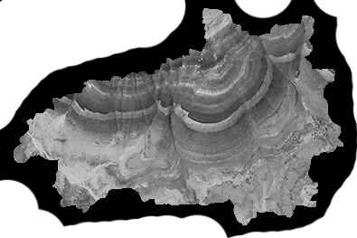
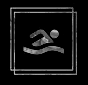
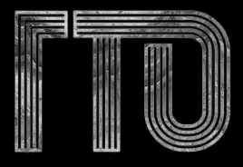
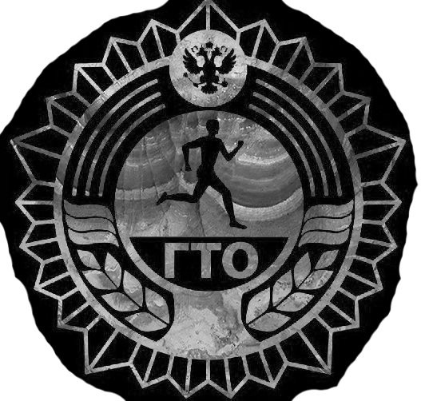
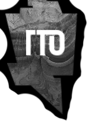

#
ВМЕСТЕ
ЕСТЬ
ИВАНОВСКИЙ
ГОСУДАРСТВЕННЫЙ
УНИВЕРСИТЕТ
2021 STUDENЬ
    

КРИСТИНА БАКУРСКАЯ / 24.09.2021
В 2021 ГОДУ 24 СЕНТЯБРЯ
В Иванове традиционно прошёл региональный этап
фестиваля Всероссийского физкультурно-спортивного
комплекса «Готов к труду и обороне» среди
муниципальных служащих.
В соревнованиях приняли участие 14
команд, что представляют города или
районы Ивановской области. Исключением
стала Кинешма – собрать команду в мэрии
и думе не могут уже 3 года.
Ряд испытаний начался с плавания на дистанцию
50 м в фитнес-клубе «ОлимпияSPORT». Для сдачи
беговых нормативов (60 м, 2000 м и 3000 м)
участники перемещались на стадион «Спартак».
Состязания по 5 дисциплинам
Заключительным испытанием стала комбинированная эстафета
«Гонка ГТО», которая принесла заветные очки для определения
сильнейшей команды. В этом году она проводилась впервые
В принятие нормативов у чиновников были
вовлечены учащиеся на факультете физической
культуры и члены сборной по легкой атлетике
госуниверситета. Ребята записывали результаты,
вносили их в электронную базу данных.
Победители и призеры регионального этапа
определялись по итогам командного и личного
первенства среди мужчин и женщин.
Личное первенство прошло по ступеням комплекса ГТО
Результаты объявили на праздничном ужине в
столовой госуниверситета в непринуждённой
обстановке. Сильнейшей командой среди
административных округов стала сборная
администрации Заволжского муниципального района.
К тому же его глава Андрей Потанин стал лучшим в
личном зачете. Второе место заняла команда
Савинского муниципалитета, третье – Лухского.
Победителем предыдущих Спартакиад ГТО среди муниципальных
служащих региона становилась команда Ивановского
муниципального района четыре года подряд
ИВАНОВСКИЙ
ГОСУДАРСТВЕННЫЙ
УНИВЕРСИТЕТ
2021 STUDENЬ
КРИСТИНА БАКУРСКАЯ
www.gto.ru
/ 24.09.2021
ИСТОЧНИК ИЗОБРАЖЕНИЙ:
Наклон вперед из положения стоя на гимнастической
скамье, поднимание туловища из положения лежа на
спине, подтягивание из виса на высокой перекладине/
рывок гири, подтягивание из виса лёжа на низкой
перекладине и стрельба из электронного оружия –
прошли в спортивном комплексе Ивановского
государственного университета.
Фестиваль проходил на базе трёх спортивных объектов